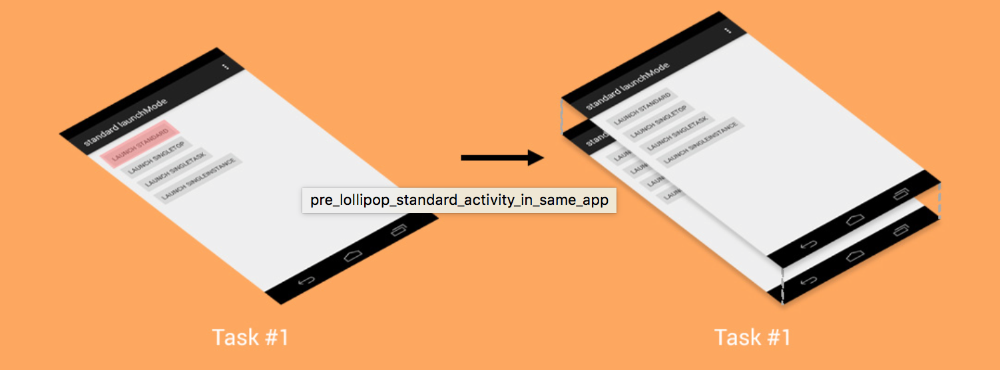
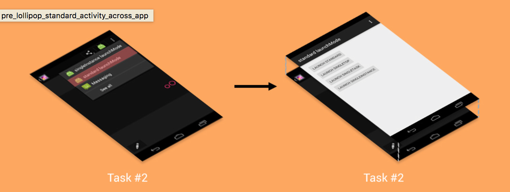
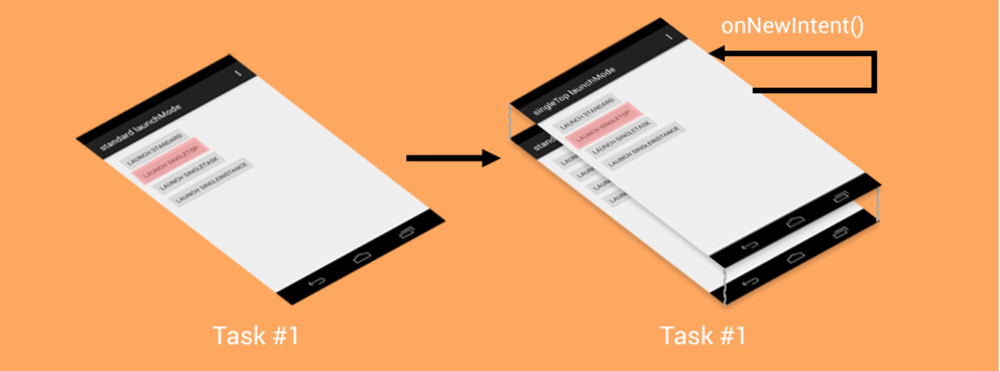
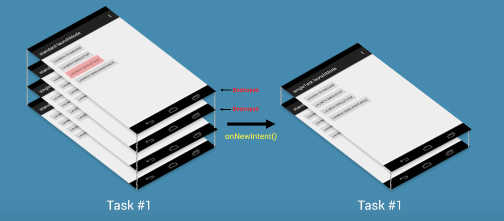
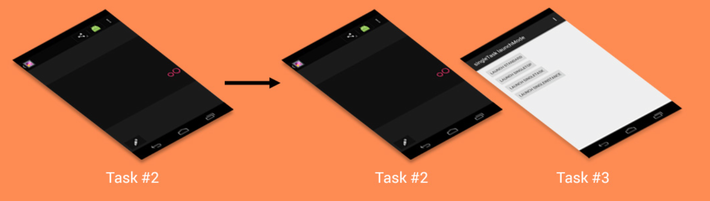
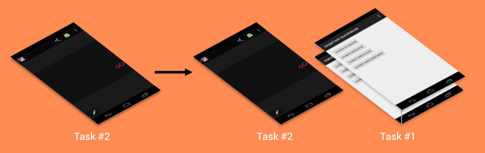
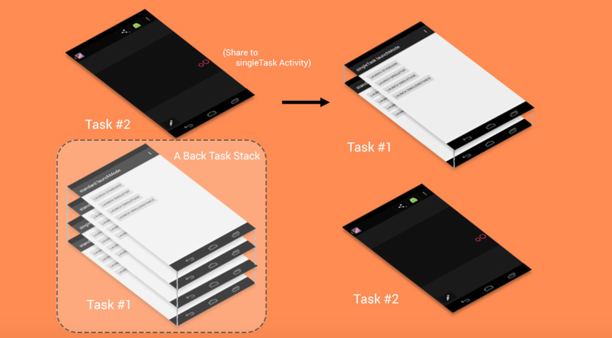

应用中的每一个Activity都是进行不同的事物处理。以邮件客户端为例，InboxActivity目的就是为了展示收件箱，这个Activity不建议创建成多个实例。而ComposeMailActivity则是用来撰写邮件，可以实例化多个此Activity对象。合理地设计Activity对象是否使用已有的实例还是多次创建，会使得交互设计更加良好，也能避免很多问题。
如何使用
使用很简单，只需要在manifest中对应的Activity元素加入android:launchMode属性即可。如下述代码
<activity
android:name=".SingleTaskActivity"
android:label="singleTask launchMode"
android:launchMode="singleTask">
</activity>
standard
这是launchMode的默认值，Activity不包含android:launchMode或者显示设置为standard的Activity就会使用这种模式。
Android 5.0之前的表现
这种Activity新生成的实例会放入发送Intent的Task的栈的顶部。下图为启动同一程序内的Activity。

下面的图片展示跨程序之间调用，新生成的Activity实例会放入发送Intent的Task的栈的顶部，尽管它们属于不同的程序。

Android 5.0及之后表现
对于同一应用内部Activity启动和5.0之前表现一样，变化的就是不同应用之间Activity启动变得合理了。
跨应用之间启动Activity，会创建一个新的Task，新生成的Activity就会放入刚创建的Task中。如下图
使用场景
standard这种启动模式适合于撰写邮件Activity或者社交网络消息发布Activity。如果你想为每一个intent创建一个Activity处理，那么就是用standard这种模式。
singleTop
singleTop其实和standard几乎一样，使用singleTop的Activity也可以创建很多个实例。唯一不同的就是，如果调用的目标Activity已经位于调用者的Task的栈顶，则不创建新实例，而是使用当前的这个Activity实例，并调用这个实例的onNewIntent方法。

在singleTop这种模式下，我们需要处理应用这个模式的Activity的onCreate和onNewIntent两个方法，确保逻辑正常。
使用场景
关于singleTop一个典型的使用场景就是搜索功能。假设有一个搜索框，每次搜索查询都会将我们引导至SearchActivity查看结果，为了更好的交互体验，我们在结果页顶部也放置这样的搜索框。
假设一下，SearchActivity启动模式为standard，那么每一个搜索都会创建一个新的SearchActivity实例，10次查询就是10个Activity。当我们想要退回到非SearchActivity，我们需要按返回键10次，这显然太不合理了。
但是如果我们使用singleTop的话，如果SearchActivity在栈顶，当有了新的查询时，不再重新创建SearchAc实例，而是使用当前的SearchActivity来更新结果。当我们需要返回到非SearchActivity只需要按一次返回键即可。使用了singleTop显然比之前要合理。
注意
- 只有在调用者和目标Activity在同一Task中，并且目标Activity位于栈顶，才使用现有目标Activity实例，否则创建新的目标Activity实例。
- 如果是外部程序启动singleTop的Activity，在Android 5.0之前新创建的Activity会位于调用者的Task中，5.0及以后会放入新的Task中。
singleTask
singleTask这个模式和前面提到的standard和singleTop截然不同。使用singleTask启动模式的Activity在系统中只会存在一个实例。如果这个实例已经存在，intent就会通过onNewIntent传递到这个Activity。否则新的Activity实例被创建。
同一程序内
如果系统中不存在singleTask Activity的实例，那么就需要创建这个Activity的实例，并且将这个实例放入和调用者相同的Task中并位于栈顶。
如果singleTask Activity实例已然存在，那么在Activity回退栈中，所有位于该Activity上面的Activity实例都将被销毁掉（销毁过程会调用Activity生命周期回调），这样使得singleTask Activity实例位于栈顶。与此同时，Intent会通过onNewIntent传递到这个SingleTask Activity实例。

跨应用之间
在跨应用Intent传递时，如果系统中不存在singleTask Activity的实例，那么讲创建一个新的Task，然后创建SingleTask Activity的实例，将其放入新的Task中。Task变化如下。

如果singleTask Activity所在的应用进程存在，但是singleTask Activity实例不存在，那么从别的应用启动这个Activity，新的Activity实例会被创建，并放入到所属进程所在的Task中，并位于栈顶位置。

更复杂的一种情况，如果singleTask Activity实例存在，从其他程序被启动，那么这个Activity所在的Task会被移到顶部，并且在这个Task中，位于singleTask Activity实例之上的所有Activity将会被正常销毁掉。如果我们按返回键，那么我们首先会回退到这个Task中的其他Activity，直到当前Task的Activity回退栈为空时，才会返回到调用者的Task。

在上图中，当Task2中的相册启动分享调用Task1中的singleTask Activity，而该Activity实例存在，并位于Task1中回退栈中的第三个位置（从上到下顺序），那么位于该Activity上面的两个Activity实例将会被销毁掉，使得该Activity实例位于栈顶。此时Task1中的回退栈只剩两个Activity，如果点击返回，那么会退到的不是相册应用，而是singleTask Activity栈位置下面的Activity，再次点击返回方可返回相册应用。
使用场景
该模式的使用场景多类似于邮件客户端的收件箱或者社交应用的时间线Activity。上述两种场景需要对应的Activity只保持一个实例即可，但是也要谨慎使用这种模式，因为它可以在用户未感知的情况下销毁掉其他Activity。
singleInstance
这个模式和singleTask差不多，因为他们在系统中都只有一份实例。唯一不同的就是存放singleInstance Activity实例的Task只能存放一个该模式的Activity实例。如果从singleInstance Activity实例启动另一个Activity，那么这个Activity实例会放入其他的Task中。同理，如果singleInstance Activity被别的Activity启动，它也会放入不同于调用者的Task中
使用场景
这种模式的使用情况比较罕见，在Launcher中可能使用。或者你确定你需要使Activity只有一个实例。建议谨慎使用。
Intent Flags
除了在manifest文件中设置launchMode之外，还可以在Intnet中设置flag达到同样的效果。如下述代码就可以让StandardActivity已singleTop模式启动
Intent intent = new Intent(StandardActivity.this, StandardActivity.class);
intent.addFlags(Intent.FLAG_ACTIVITY_SINGLE_TOP);
startActivity(intent);
原文地址
http://droidyue.com/blog/2015/08/16/dive-into-android-activity-launchmode/index.html